ツイタラ 使い方ガイド
最終更新: 2026-07-30 / Doster Studio
ツイタラは、登録した場所に着くと自動で Todo を表示してくれる、場所連動型のリマインダーアプリです。スーパー、駅、会社、訪問先など、よく行く場所に「やるべきこと」を結び付けておけば、現地に着いた瞬間に思い出せます。
1. ツイタラとは
ホーム画面には、登録した場所がカード形式で並びます。各カードには場所名と、その場所に紐付けた Todo の数、現在地からの距離が表示されます。
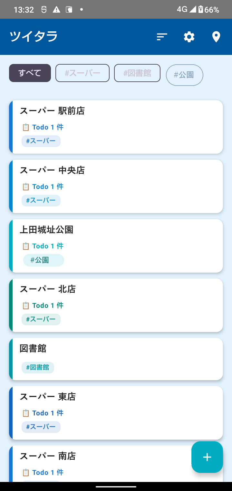
ホーム画面：登録した場所が一覧で表示されます
ツイタラはバックグラウンドで動作するため、アプリを閉じていても登録した場所に近づくと自動で通知が届きます。
2. 料金について
ツイタラは無料でお試しいただけます。登録できる場所が 5 か所を超える場合のみ、買い切りでの解放が必要です。
料金プラン
| 無料 |
場所を 5 か所 まで登録できます。機能の制限はありません（通知・Todo・タグ・定期 Todo などすべて使えます）。 |
すべての機能を使う
（買い切り） |
場所を 無制限 に登録できます。一度お支払いいただくだけで、月額料金や追加課金は一切ありません。 |
価格はアプリ内の購入画面に表示されます。お支払いは Google Play を通じて行われ、当方がクレジットカード情報などを受け取ることはありません。
5 か所を超えて登録しようとしたとき
無料のまま 6 か所目を追加しようとすると、上限のお知らせが表示されます。すでに登録済みの場所は、そのまま通常どおり使えます（通知も Todo も制限されません）。追加ができなくなるだけです。
他の端末からデータを引き継いだ場合など、5 か所を超えるデータをお持ちの状態でも、既存の場所はすべてそのまま表示・通知されます。新しく追加したい場合に購入をご検討ください。
購入後の引き継ぎ（機種変更・再インストール）
購入は Google アカウントに紐付いて記録されます。同じ Google アカウントであれば、機種変更や再インストールをしても自動的に購入済みの状態に戻ります。追加でお支払いいただく必要はありません。
復元されない場合は、Play ストアにログインしているアカウントが購入時と同じかご確認ください。それでも解決しない場合はサポートまでご連絡ください。
3. 最初に行う設定（権限の許可）
ツイタラを正しく動作させるには、位置情報を 「常に許可」 にする必要があります。初回起動時に順番にご案内しますので、画面の指示に沿って進めてください。
初回起動時は、次の順番でダイアログが表示されます。
初回起動時の流れ
- 通知の許可 …「許可」をタップ
※許可しないと到着時にお知らせが届きません
- 位置情報の許可 …「正確な位置」を選んだうえで「アプリの使用時のみ」をタップ
※「おおよその位置」では数百m〜数kmの誤差が出るため、到着検知が正しく動作しません
- 「位置情報の『常に許可』について」 …ツイタラからの説明が表示されます。内容をご確認のうえ「続ける」をタップ
- 位置情報の権限画面（Android の設定画面）…「常に許可」を選択して戻る
- 「通知の自動起動について」 …「設定を開く」から「アラームとリマインダー」をオンにする
※時間帯指定や端末再起動後の自動再開に必要です。あとから設定画面でも変更できます
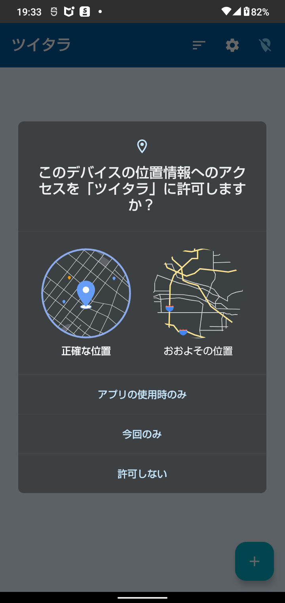
位置情報の許可ダイアログ（「正確な位置」＋「アプリの使用時のみ」を選択）
Android のセキュリティ仕様により、最初のダイアログでは「常に許可」を直接選べません。まず「アプリの使用時のみ」を選び、続いて表示される画面で「常に許可」に切り替える流れになります。
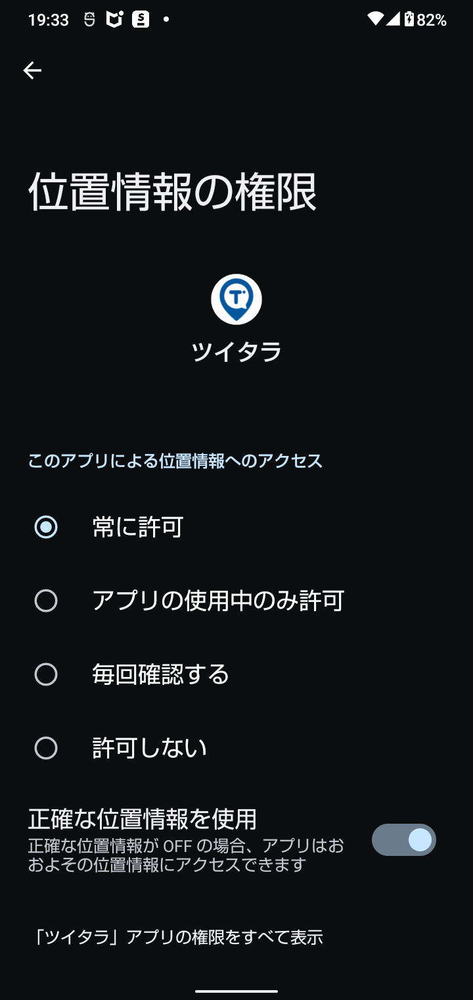
「常に許可」を選択した状態
なぜ「常に許可」が必要？
ツイタラはアプリを閉じている間も場所への接近を検知する設計です。「アプリの使用中のみ許可」だと、画面を消した瞬間に位置検知が停止してしまい、到着通知が届きません。
位置情報は端末内でのみ処理され、当方（開発者）のサーバーや第三者に送信されることはありません。詳細は
プライバシーポリシーをご確認ください。
あとから許可し直すこともできます
初回に「今はしない」を選んだ場合や、あとから設定を変えたい場合は、ホーム画面上部に表示される警告バナーをタップすると、該当する設定画面へ直接移動できます。
4. 場所を登録する
場所を登録する方法は 2 種類あります：
- A. Google マップから共有する（Google マップで検索した場所をワンタップで登録 / おすすめ）
- B. ツイタラから登録する（ホーム画面の「+」ボタン）
おすすめは A（Google マップから共有）です。地図上で場所を確認しながら登録できるので、どこを登録しているかが視覚的に分かりやすく、住所や座標も自動入力されるため入力ミスがありません。
A. Google マップから共有して登録する
共有から登録する手順
- Google マップで登録したい場所を検索
- 場所の詳細画面で「共有」ボタンをタップ
- 共有先の一覧から「ツイタラ」を選択
- ツイタラが起動し、場所名・住所・座標が自動入力される
- 必要に応じてタグを追加し「追加する」ボタンをタップ
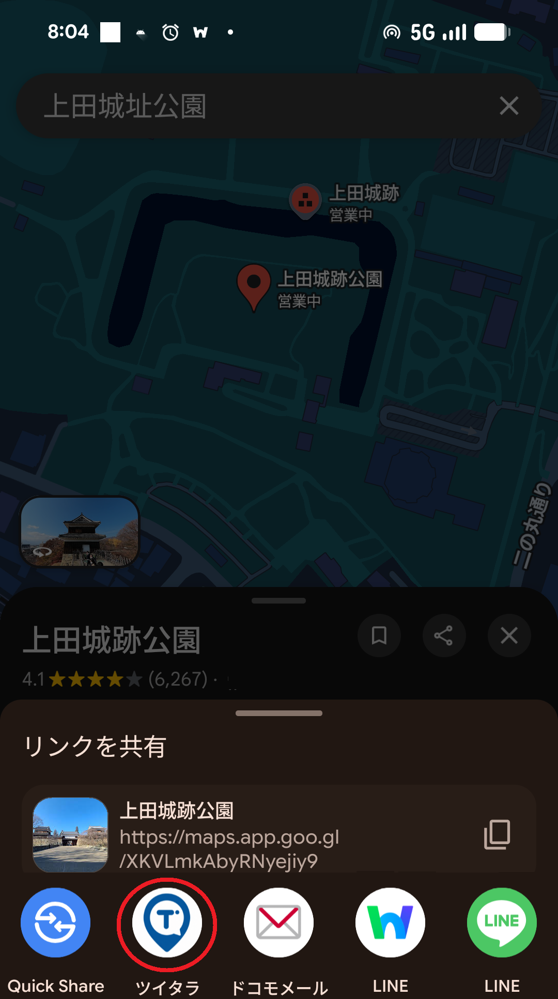
共有先の一覧から「ツイタラ」を選択
店舗名・施設名で検索した場所をそのまま登録できるので、住所が分からない場所（ファミレス、コンビニ等のチェーン店舗）も簡単に登録できます。
B. ツイタラから登録する
ホーム画面右下の「+」ボタンから、新しい場所を登録できます。4 通りの方法が選べます。
- 現在地から：今いる場所をワンタップで登録
- 住所を入力：住所をテキストで入力して登録（主要な施設名・駅名なども入力できることが多いです）
- マップから：Google マップで該当場所の URL をコピーしてからボタンをタップ（クリップボードから座標を自動取得）
- 座標を直接入力：緯度・経度を直接指定
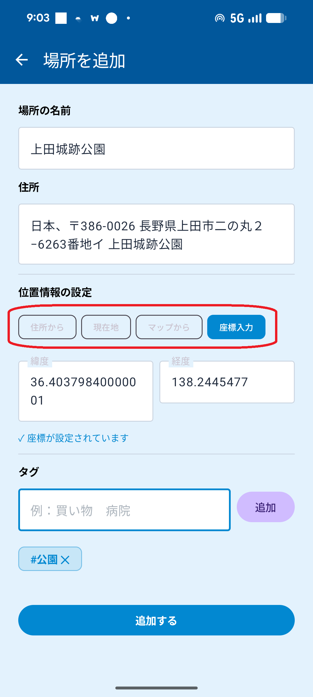
「+」ボタン → 場所追加画面（4 通りの登録方法）
登録した場所を確認する（重要）
登録後は、実際に正しい場所が登録されているか確認することをおすすめします。特に住所や施設名から登録した場合、座標が意図したものとずれることがあります。到着検知は登録座標を基準に動作するため、ずれていると通知が来ない／違う場所で通知が来る原因になります。
確認手順
- ホーム画面で登録した場所のカードをタップ → 詳細画面が開く
- 右上の「編集」をタップ → 編集画面が開く
- 「📍 地図で確認する」ボタンをタップ → Google マップが起動し、登録座標にピンが立つ
- 意図した場所と一致しているか視覚的に確認
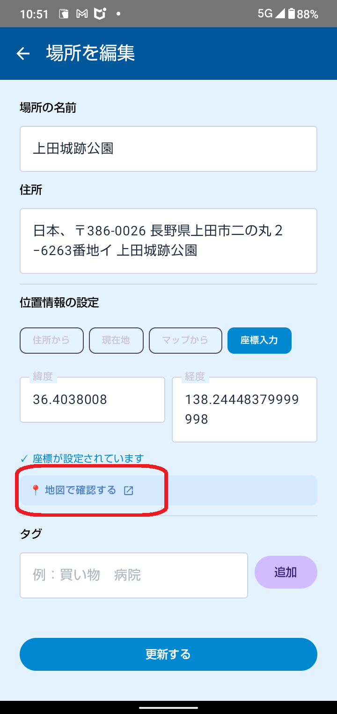
編集画面の「📍 地図で確認する」ボタン
5. Todo を追加する
登録した場所をホーム画面でタップすると詳細画面が開きます。ここで Todo を追加します。
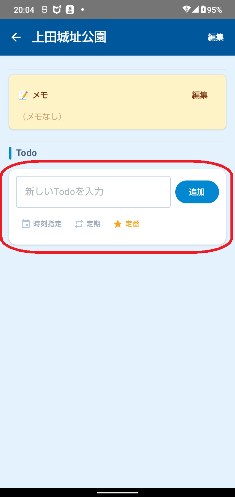
場所の詳細画面で Todo を追加
Todo の種類
- 通常 Todo：その場所に着いたら表示される基本のリマインダー
- 時刻指定 Todo：指定した時刻以降に到着したときのみ表示
- 定期 Todo：毎日・毎週・毎月・毎年の繰り返し設定が可能
- 定番 Todo（テンプレート）：よく使う Todo をテンプレートとして保存し、「定番」ボタンから呼び出せます
定番 Todo の例：スーパー →「牛乳を買う」／会社 →「メールチェック」／訪問先 →「名刺交換」「資料を渡す」
6. 到着通知を受け取る
登録した場所に近づくと、設定した距離（初期値 100m）以内で自動的に通知が届きます。アプリを起動していなくても動作します。
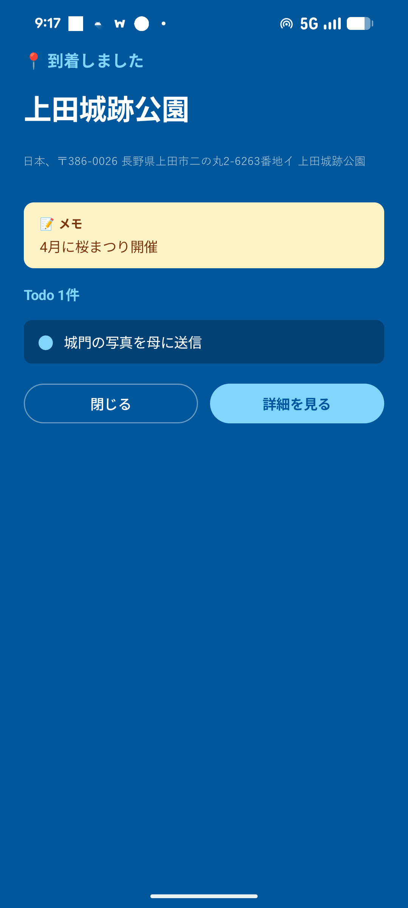
ロック画面では全画面で Todo リストを表示
通知をタップすると、その場所に登録した Todo の一覧が表示されます。ロック中の画面にも表示されるので、すぐに内容を確認できます。
動作の仕組み（重要）
ツイタラはバッテリー消費を抑えるため、スマートフォンの動きをきっかけに位置情報を確認する設計です。加速度センサーで動きを検知し、動きがあったタイミングで登録場所への接近をチェックします。
スマホが完全に静止していると、時刻指定 Todo の時刻や時間帯指定の開始時刻になっても検知が動きません。ポケットやカバンに入れて持ち歩いているとき、手に持って歩いているときは通常どおり動作します。机に置きっぱなしの場合は、少し動かす（持ち上げる・移動する）と検知が再開します。
7. ホーム画面の操作
場所の並び替え
ホーム画面上部の ソートアイコン（≡） をタップして、並び順を 5 種類から選べます。
- 登録順：登録した順（初期値）
- 名前順：場所名のあいうえお順
- 距離順：現在地から近い順
- Todo件数順：未完了 Todo が多い順
- 更新日時順：最近編集した順
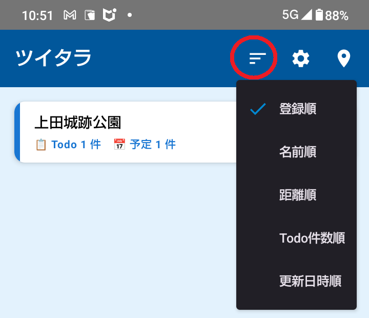
ソートアイコン（≡）をタップして並び順を選択
選んだ並び順はアプリを閉じても保持されます。訪問先を回るときは「距離順」が便利です。
位置情報検知の ON / OFF
ホーム画面右上の 位置情報アイコン（） をタップすると、位置検知を手動で ON / OFF できます。旅行中や休日など、一時的に通知を止めたいときにお使いください。
手動で OFF にしている間は、登録場所に近づいても通知は届きません。
タグでの絞り込み
場所登録時に付けたタグ（例：#買い物、#訪問先）で、表示する場所を絞り込めます。
使い方
- ホーム画面上部に登録済みのタグがチップとして並びます
- タグをタップすると、そのタグが付いた場所だけが表示されます
- 複数選択すると AND（全部含む）/ OR（どれか含む） を切り替えられます
- 「すべて」をタップで絞り込み解除
一括で Todo を追加する
複数の場所に同じ Todo をまとめて追加できます。「すべての訪問先でカタログを配る」「どこかのスーパーで卵を買う」といった使い方ができます。
追加手順
- タグで絞り込む、または「すべて」を選んだままにする
- 表示されるボタンをタップ
・タグ 1 つ →「「#タグ名」に一括Todoを追加」
・タグ複数 →「表示中の N 件に一括追加」
・絞り込みなし →「すべての場所に一括Todoを追加」
- Todo の内容を入力し、「個別 Todo」か 「共通 Todo」を選択
- 「追加する」で完了
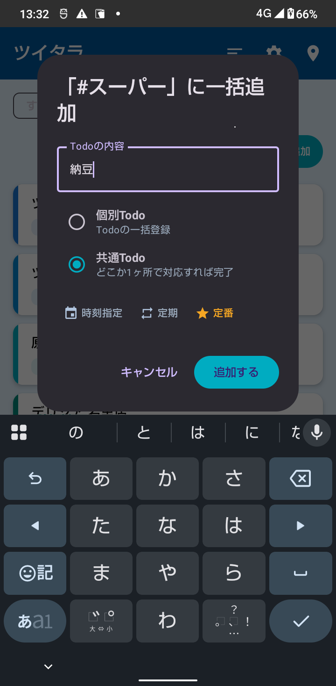
一括追加ダイアログ（個別 / 共通、時刻指定・定期・定番も選べます）
個別 Todo と共通 Todo の違い
- 個別 Todo：各場所に独立した Todo として追加されます。1 か所で完了しても他には影響しません。
例：訪問先すべてに「カタログ配布」→ 訪問先ごとに個別に完了させる
- 共通 Todo：どこか 1 か所で完了にすれば、全場所で完了扱いになります。
例：スーパー各店に「卵を買う」→ どこか 1 店で買えば完了
共通 Todo は「🔗 共通」バッジで見分けられます。タグを削除すると、そのタグで一括追加された Todo も自動的に削除されます。
8. 基本設定
ホーム画面の歯車アイコンから設定画面を開きます。
カラーテーマ
7 種類（マリン／ウォーム／アース／ラブリー／ハッピー／カラフル／モノクロ）から選べます。
到着通知をする時間帯
業務時間中だけ動かしたい場合など、特定の時間帯だけ位置検知を有効にできます。時間帯外は自動で停止し、バッテリーを節約します。
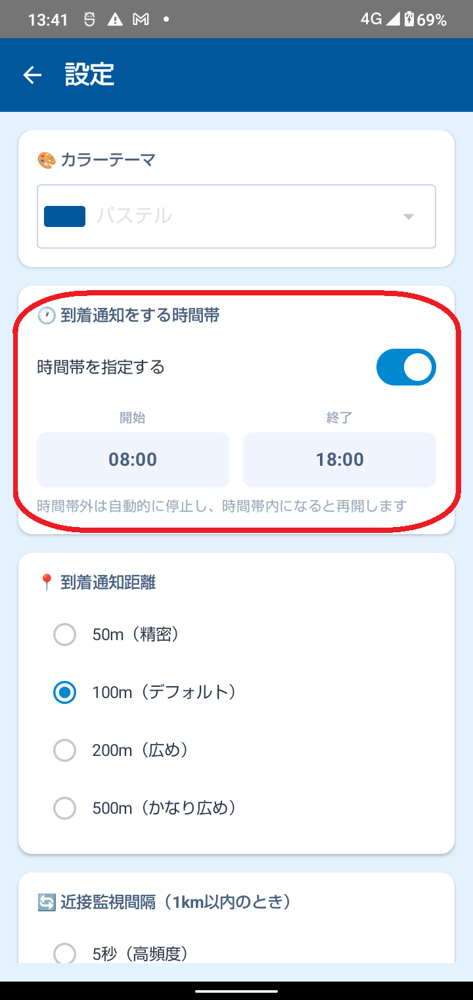
時間帯指定：9:00〜18:00 の例
この機能には Android の「正確なアラーム」権限が必要です。このカードの先頭に許可状況が表示されるので、「✗ 許可されていません」と出ている場合はボタンから許可してください。
到着通知距離
登録場所から何メートル以内で「到着」とみなすかを、50m〜500m の範囲で設定できます。
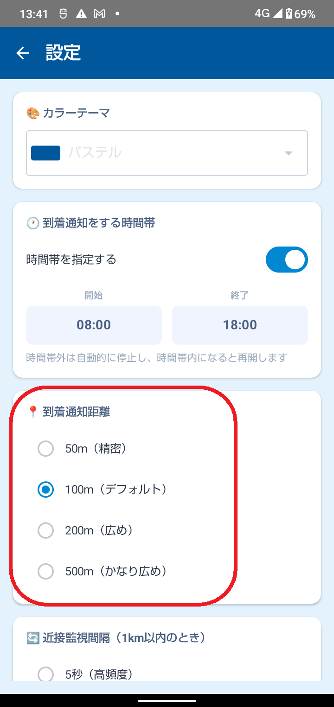
到着距離は 50m〜500m で調整可能
狭くする（50m）と、より正確に近づいたときだけ通知。広くする（500m）と早めに通知が届きます。車移動が多い方は広めがおすすめです。
近接監視間隔
登録場所の 500m 以内にいるときの位置確認の間隔を、5 秒／10 秒／30 秒から選べます。車移動が中心の方は 5〜10 秒、徒歩中心の方は 30 秒がおすすめです。
完了 Todo の自動削除
完了した Todo を一定時間後に自動で消せます（15 分後〜12 時間後、または削除しない）。定期 Todo は削除ではなく、次回の予定にリセットされます。
9. データの引き継ぎ・バックアップ
登録した場所・Todo・定番 Todo・各種設定は、ファイルとして書き出して別の端末に引き継げます。
機種変更の手順
- 旧端末：設定 →「データのバックアップ／復元」→「バックアップを書き出す」
- 保存先を選んでファイルを保存（Google ドライブなどに保存すると受け渡しが簡単です）
- 新端末：ツイタラをインストールし、設定 →「バックアップから復元する」
- 書き出したファイルを選択
復元すると、その端末の現在のデータはすべて置き換わります。復元前にご確認ください。
Android の標準バックアップ機能が有効な場合、機種変更時に自動で復元されることもあります。ただし確実に引き継ぐには、上記の書き出し／読み込みをおすすめします。
10. 通知が来ないときは
到着しても通知が届かない場合、次の順にご確認ください。
- 1. 位置情報が「常に許可」になっていますか？
- ホーム画面に赤い警告バナーが出ていればタップして設定画面へ。「アプリの使用中のみ許可」では、アプリを閉じている間は検知できません。
- 2. 通知が許可されていますか？
- こちらも警告バナーが表示されます。タップして通知設定を開き、許可してください。
- 3. 位置検知が OFF になっていませんか？
- ホーム画面右上の位置情報アイコンをご確認ください。灰色／斜線付きの場合は OFF です。
- 4. 時間帯指定の範囲外ではありませんか？
- 設定で時間帯を指定している場合、その時間外は検知が停止します。
- 5. その場所に未完了の Todo がありますか？
- ツイタラは未完了の Todo がある場所でのみ通知します。Todo が無い場所や、すべて完了済みの場所では通知されません（メモだけでは通知されません）。
- 6. スマホが長時間静止していませんか？
- 動きをきっかけに位置を確認する仕組みのため、完全に静止していると検知が動きません。持ち歩いていれば通常どおり動作します。
- 7. 登録した座標は正しいですか？
- 編集画面の「📍 地図で確認する」で、意図した場所にピンが立つかご確認ください。
- 8. 電池の最適化が効いていませんか？
- 端末の設定で、ツイタラの電池最適化を「制限しない」にすると安定することがあります。
屋内では GPS の精度が落ちるため、到着通知距離を広め（200m 程度）に設定すると安定することがあります。
ツイタラをご利用いただきありがとうございます。ご不明な点・不具合・改善のご要望などありましたら、お気軽にご連絡ください。